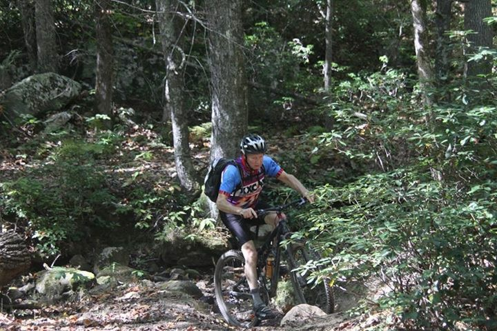

<template>
  <div class="post-container">
    <div class="blog">
      <div class="columns">
        <div class="column">
          <a href="" click.trigger="router.navigateToRoute('creature2017')">
            <div class="title">Virginia's Blue Ridge Creature from Carvins Cove</div>
          </a>
          <div class="subtitle">Oct 1st, 2017</div>
          <p>
            Once again Virginia's Blue Ridge Creature from Carvins Cove was a resounding success. Special thanks to
            Debbie Inman, Renee Powers, Chris Lee, and all the wonderful staff who helped make the Creature come alive.
          </p>
          <p>
            <a href="" click.trigger="router.navigateToRoute('results')">View the results.</a>
          </p>

        </div>
      </div>

      <div class="columns">
        <div class="column">
          <div class="ytWrapperWrapper">
            <div class="ytWrapper">
              <iframe width="100%"
                      src="https://www.youtube.com/embed/uO44Tt0woT8"
                      frameborder="0" allowfullscreen>
              </iframe>
            </div>
          </div>
        </div>
      </div>

      <!--<div class="columns after-yt" >-->
        <!--<div class="column">-->
          <!---->
        <!--</div>-->
      <!--</div>-->
      <div class="columns">
        <div class="column">

          <div class="creature-course">
            <iframe src='https://rwgps-embeds.com/embeds?type=route&id=25833335&sampleGraph=true'
                    style='width: 1px; min-width: 100%; border: none;' scrolling='no'>

            </iframe>
          </div>
        </div>
      </div>
    </div>
  </div>
</template>
